flowchart LR
T1["Trasladar el centro de la imagen al origen de coordenadas"]
R["Rotar la imagen"]
T2["Trasladar la imagen de vuelta a su posición original"]
T1 --> R
R --> T2
2 Transformaciones geométricas
2.1 Ejercicio 2.1
Se puede rotar una imagen respecto al centro de la imagen, aplicando una transformación afín utilizando la función cv2.getRotationMatrix2D() [1].
La matriz de rotación de OpenCV [1] incorpora el centro de rotación y un factor de escala.
\[ M = \begin{bmatrix} \alpha & \beta & (1-\alpha)c_x-\beta c_y\\ -\beta & \alpha & \beta c_x+(1-\alpha)c_y \end{bmatrix} \]
donde
\[ \begin{aligned} \alpha &= s\cos\theta\\ \beta &= s\sin\theta \end{aligned} \]
Como se puede ver en Listado 2.1 esta matriz es equivalente a realizar las siguientes transformaciones de forma encadenada:
# Escogemos el centro de rotación
c_h, c_w = 100, 200
# Matriz de rotación con OpenCV
rot = cv.getRotationMatrix2D((c_w, c_h), 30, 1)
# Rotación respecto (c_w, c_h) con transformaciones afines
# Trasladar el centro de la imagen al origen de coordenadas
T1 = mtm.TRANSLATE(t_x=-c_w, t_y=-c_h)
# Rotar la imagen respecto al origen de coordeandas
R = mtm.ROTATE(30)
# Trasladar la imagen de vuelta al su posición original
T2 = mtm.TRANSLATE(t_x=c_w, t_y=c_h)
# Matriz de rotación calculada
M = T2 @ R @ T1
print(f'np.allclose(M[:2,:], rot) = {np.allclose(M[:2,:], rot)}')np.allclose(M[:2,:], rot) = TrueAl rotar una imagen las dimensiones del marco de salida cambian, si no ajustamos las dimensiones al nuevo marco perdemos información de la imagen original.
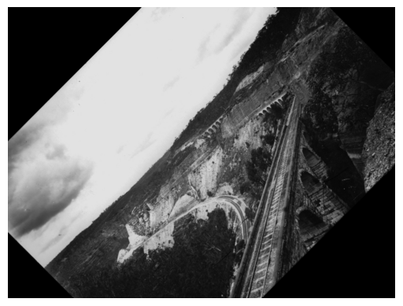
Para evitar la pérdida de información durante la rotación de una imagen, es necesario ajustar las dimensiones del marco de salida de modo que contenga completamente la imagen transformada [2].
Las nuevas dimensiones pueden calcularse a partir de las proyecciones horizontales y verticales de los lados de la imagen original, como se ilustra en Figura 2.3.
Una vez calculadas estas dimensiones, es necesario situar el centro de la imagen original en el centro del nuevo marco, evitando así que la imagen rotada quede recortada.

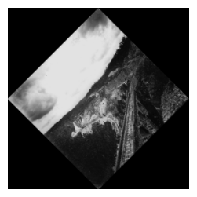
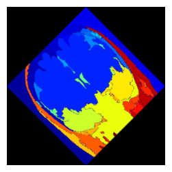
2.2 Ejercicio 2.2
2.2.1 Implementación de las transformaciones de forma individual
---
title: Rotar una imagen respecto a su centro
---
flowchart LR
T1["Reescalar 1/4 ambos ejes"]
T2["Shear -30ª sobre el eje X"]
T3["Giro 90º (sentido antihorario)"]
T1 --> T2
T2 --> T3
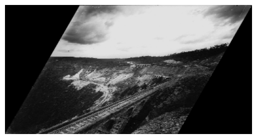
2.2.2 Implementación de las transformaciones compuestas
En la composición de transformaciones geométricas, el orden de las transformaciones afecta al resultado, ya que la multiplicación de matrices no es conmutativa [3]:
\[ \mathbf{A}\mathbf{B}\neq\mathbf{B}\mathbf{A} \]
Por ejemplo, dadas las matrices:
\[ \mathbf{A} = \begin{bmatrix} 1 & 2\\ 3 & 4 \end{bmatrix}, \qquad \mathbf{B} = \begin{bmatrix} 0 & 1\\ 0 & 0 \end{bmatrix} \]
Se obtienen los siguientes productos:
\[ \mathbf{A}\mathbf{B} = \begin{bmatrix} 0 & 1\\ 0 & 3 \end{bmatrix}, \qquad \mathbf{B}\mathbf{A} = \begin{bmatrix} 3 & 4\\ 0 & 0 \end{bmatrix} \]
Sin embargo, la multiplicación de matrices sí cumple la propiedad asociativa, que permite agrupar varias transformaciones en una única matriz sin alterar el resultado.
Para un punto representado mediante el vector columna \(\mathbf{x}\), si primero se aplica la transformación \(\mathbf{T}_1\) y posteriormente \(\mathbf{T}_2\), se obtiene:
\[ \mathbf{x}' = \mathbf{T}_2(\mathbf{T}_1\mathbf{x}) = (\mathbf{T}_2\mathbf{T}_1)\mathbf{x} = \mathbf{T}_C\mathbf{x} \]
donde \(\mathbf{T}_C=\mathbf{T}_2\mathbf{T}_1\) representa la matriz de transformación compuesta.
Como se muestra en Figura 2.6, el orden de aplicación de las transformaciones afecta al resultado final. En el primer caso se aplica una traslación seguida de una rotación, mientras que en el segundo se invierte el orden, obteniéndose posiciones finales diferentes para un mismo punto inicial.
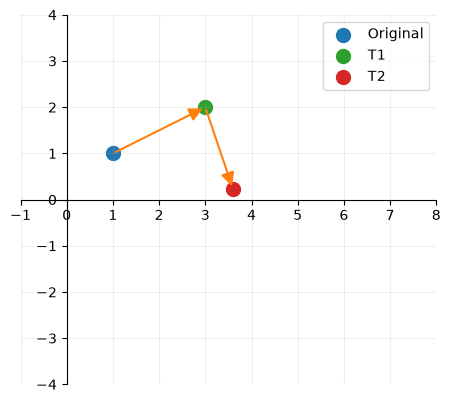
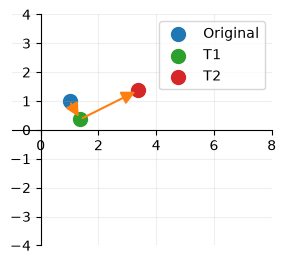
El resultado de realizar las transformaciones mediante composición de matrices, se muestra en la Figura 2.7 (a), geométricamente el resultado es el mismo. Sin embargo, si observamos el detalle de las intensidades de los píxeles resultantes, en la figura Figura 2.7 (b), no son iguales. Cada transformación sobre la imagen realiza una interpolación, en las transformaciones individuales por tanto se están aplicando tres interpolaciones, por una en el caso de la transformación compuesta.
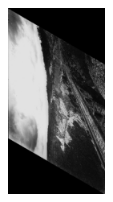
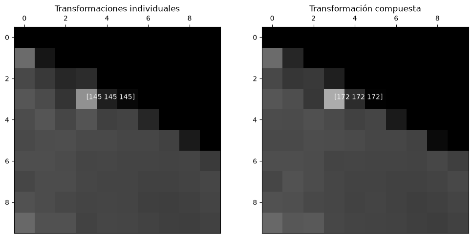
Al realizar transformaciones geométricas de 2D sobre una imagen, las coordenadas de los píxeles de la imagen resultante no tienen por qué coincidir con las de la imagen original.
Para determinar el valor de cada píxel de la imagen de destino, OpenCV utiliza un proceso de mapeo inverso, que consiste en recorrer los píxeles de la salida y calcular sus coordenadas correspondientes en la imagen de origen [4].
\[ \operatorname{dst}(x,y) = \operatorname{src}\left(f_x(x,y),f_y(x,y)\right) \]
donde \(f_x(x,y)\) y \(f_y(x,y)\) representan las coordenadas de la imagen original correspondientes al píxel \((x, y)\) de la imagen destino.
Estas coordenadas toman valores decimales y, por tanto, no tienen porque tener una correspondencia exacta con un la posición de un píxel de la imagen original. Para estimar la intensidad del píxel de la imagen de salida se aplican diferentes métodos de interpolación.
La interpolación por el vecino más cercano consiste en asignar a cada píxel de destino el valor del píxel de origen cuya posición sea la más cercana a las coordenada calculadas [5]. Como se muestra en Figura 2.8, el valor del punto interpolado se obtiene directamente del píxel más cercano.
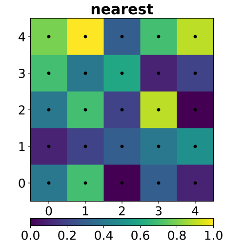
Este método de interpolación es computacionalmente poco costoso, no tiene que realizar promedios entre píxeles cercanos, y especialmente útil cuando es importante conservar los valores orginales de los píxeles, por ejemplo si vamos a aplicar máscaras de segmentación es pasos posteriores.
2.2.3 Transformar la región de interés (ROI)
Para transformar la región de interés (ROI) hasta la posición objetivo, primero es necesario determinar las coordenadas de sus vértices en la imagen original.
Como se muestra en Figura 2.9, estas coordenadas pueden calcularse a partir de las dimensiones de la región, su orientación y las proyecciones de sus lados sobre los ejes de coordenadas.
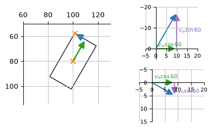
Tras determinar las coordenadas de los vertices de la región de interés, se propone una secuencia de transformaciones geométricas para situarla en la posición objetivo.
Como se ilustra en Figura 2.10, el procedimiento consta de tres operaciones: primero se aplica una rotación de 30º en sentido antihorario para alinear la región con los ejes de coordenadas, luego se realiza una traslación para situar el vertice superior izquierdo en el origen y finalmente se aplica un escalado uniforme para reducir sus dimensiones a la mitad.
---
title: Secuencia de transformaciones geométricas
---
flowchart LR
T1["Rotación de 30°"]
T2["Traslación al origen"]
T3["Escalado uniforme (0,5)"]
T1 --> T2 --> T3

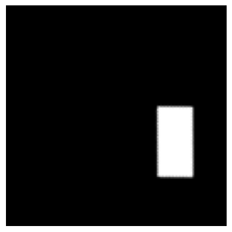

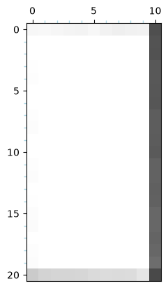
2.3 Ejercicio 2.3
2.3.1 Deformación de una imagen
La deformación de la imagen se realiza mediante una transformación lineal por tramos, en la que se aplica un factor de escala horizontal diferente a cada mitad de la imagen, tal como se define en Ecuación 2.1.
\[ \begin{aligned} x' &= \begin{cases} \frac{2}{3}x, & x \leq W/2 \\[6pt] \frac{W}{3} + \frac{4}{3}(x-W/2), & x > W/2 \end{cases} \\[12pt] y' &= y \end{aligned} \tag{2.1}\]
Como se observa en Figura 2.11, la transformación modifica únicamente las coordenadas horizontales, manteniendo las verticales sin cambios:
- Mitad izquierda: se aplica un factor de escala de \(2/3\), comprimiendo su anchura original de \(W/2\) a \(W/3\).
- Mitad derecha: se aplica un factor de escala de \(4/3\), expandiendo su anchura original de \(W/2\) a \(2W/3\).
Finalmente, ambas regiones se combinan para obtener la imagen transformada, conservando la anchura total original \(W\) y manteniendo la continuidad en el punto de unión entre las dos mitades.


2.3.2 Transformación no lineal
Se considera la siguiente transformación geométrica:
\[ \begin{aligned} y' &= y + 0.4(x - 0.5)^2 - 0.1 \\ x' &= 2x \end{aligned} \tag{2.2}\]
La transformación Ecuación 2.2 es no-lineal, debido a la dependecia cuadrada de la coordenada \(x\), a diferencia de las trasnformaciones afines esta transformación no conserva las líneas rectas, como se observa en la figura Figura 2.12.
Aplicamos la tranformación Ecuación 2.2 a la imagen siguiendo la secuencia:
---
title: Secuencia de transformaciones no lineales
---
flowchart LR
T1["Marco con los píxeles de destino"]
T2["(x',y')"]
T3["(x,y)"]
T4["Píxeles de origen"]
T1 -- "Normalizar" --> T2
T2 -- "Transformación inversa" --> T3
T3 -- "Desnormalizar" --> T4